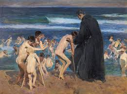

El exito no era algo nuevo para Sorolla
Pero su impulso definitivo provino de las magnificas críticas de estas obras
Sol de la tarde
La obra "Sol de la tarde", realizada en 1903, se encuentra en la colección de la Hispanic Society of America. En esta pintura, elementos como el movimiento de las velas, la figura de los bueyes y la presencia de los pescadores sirven como excusa para la verdadera obsesión de Sorolla: capturar la luz cambiante del Mediterráneo en distintas horas del día. El título revela el auténtico tema de la obra
Verano
La obra "Verano", realizada en 1904, ubicada en el Museo Nacional de Bellas Artes de Cuba, es un destacado ejemplo del luminismo de Joaquín Sorolla. Representa una escena costera mediterránea llena de luz vibrante, donde bañistas y paisaje se funden en una atmósfera cálida y dinámica. Con su pincelada suelta y tonos dorados y azulados, Sorolla captura la esencia del verano, elevando lo cotidiano a una expresión poética y envolvente.
Que fueron presentadas fuera del concurso en el reenombrado Salón de Paris

Superando incluso el elogio obtenido años atrás por "Triste Herencia" o "Cosiendo la vela"

Triste herencia, (1899) es una de las obras más importantes de Joaquín Sorolla, inspirada en los niños enfermos del hospital de San Juan de Dios bañándose en el mar bajo la vigilancia de un fraile. Sorolla confesó en 1909 que sufrió profundamente al pintarla y prometió no abordar un tema similar nuevamente. Aunque estuvo a punto de abandonar la obra, el apoyo de amigos como Vicente Blasco Ibáñez lo impulsó a continuar. Joaquín Sorolla (1863–1923) fue clave en la modernización del arte español. Aunque en España su obra Cosiendo la vela no fue bien recibida, obtuvo reconocimiento internacional al ser premiada en Múnich en 1897. Influido por el naturalismo y la modernidad que descubrió en París,
Sorolla desarrolló un estilo intuitivo y vibrante, centrado en la luz y el color, alejándose de los impresionistas en su enfoque emocional.Cosiendo la vela es un ejemplo de su habilidad para capturar escenas cotidianas con naturalidad y luminosidad, reflejando su compromiso por mostrar
la vida y las costumbres de su tierra.
Joaquín Sorolla (1863–1923) fue clave en la modernización del arte español. Aunque en España su obra Cosiendo la vela no fue bien recibida, obtuvo reconocimiento internacional al ser premiada en Múnich en 1897. Influido por el naturalismo y la modernidad que descubrió en París,
Sorolla desarrolló un estilo intuitivo y vibrante, centrado en la luz y el color, alejándose de los impresionistas en su enfoque emocional.Cosiendo la vela es un ejemplo de su habilidad para capturar escenas cotidianas con naturalidad y luminosidad, reflejando su compromiso por mostrar
la vida y las costumbres de su tierra.